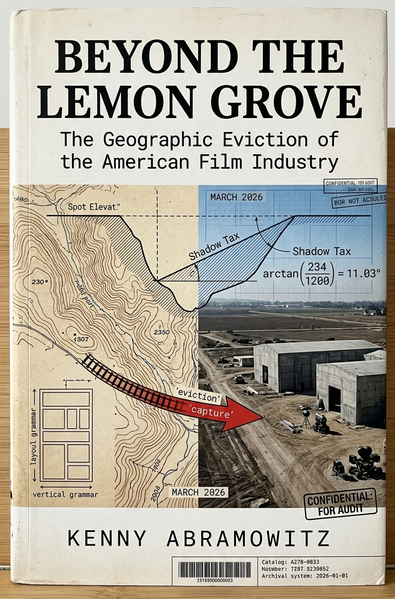
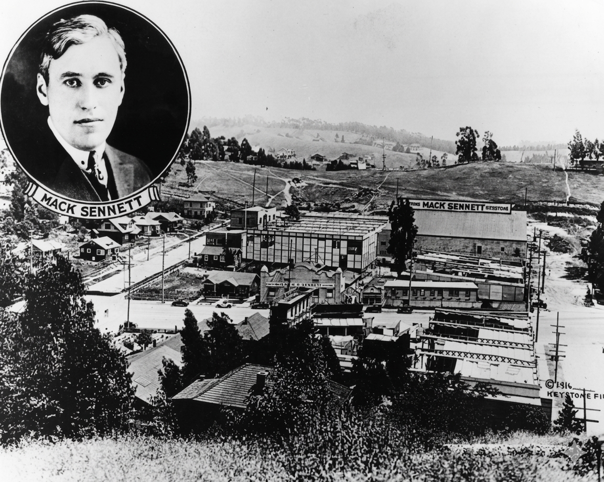
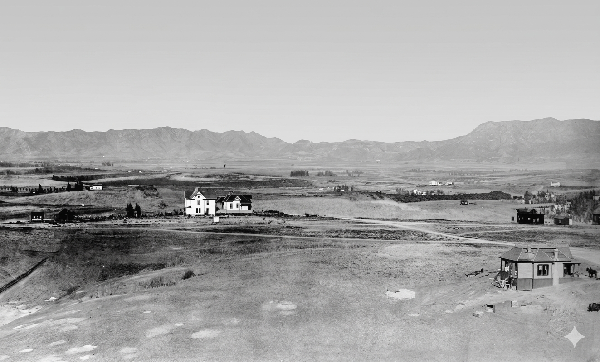

Beyond the Lemon Grove
The Geographic Eviction of the American Film Industry
Manuscript in progress · Proposal complete · Seeking representation

The floor is not a crop. The floor is a function.
Hollywood was not discovered, chosen, or predestined. It was occupied — in the 1,367-day gap between a water deal and a water delivery — by an industry that moved into a bankrupt temperance town's devalued roadhouse for thirty dollars a month and never left. Film didn't create the floor. The floor selected film — once — and never let go.
The Document Nobody Read
In 1894 the United States Geological Survey filed the Los Angeles Quadrangle — documenting the Hollywood-Colegrove corridor as a flat, zero-percent-grade alluvial plain at 356 feet above sea level. In the same year, real estate agents were selling the same ground as lemon land. Neither document knew the other existed.
The survey encoded a measurable daily production penalty on every studio built in the Edendale canyon — a penalty derived directly from the contour lines the surveyor drew. Nobody in the film industry read the survey. Nobody in the film history literature asked what the terrain actually cost to work on.
This book reads it for the first time.

What the Standard History Misses
The standard explanation for Hollywood's emergence has three parts — sunshine, cheap land, and flight from Edison's patent enforcers. All three are true. None is sufficient.
They explain why the industry came west. They do not explain why it landed on a specific coordinate at Sunset Boulevard and Gower Street and stayed permanently. They do not explain why Edendale, three miles east, which had climate and cheap land in equal measure, became a capital trap the industry had to escape. They treat terrain as a flat commodity — acreage to be counted, not geometry to be measured.
The terrain was not flat. It was two radically different systems on the same federal map.
The canyon at Edendale imposed a quantifiable daily loss of usable shooting light — derived directly from the 8-percent cross-slope the 1894 survey documented. That penalty, 88.3 minutes per shooting day, compounded into 43 lost shooting days per year — a 17.3 percent budget penalty on every production. The canyon also imposed a geometric limit on camera retreat: the same cross-slope that taxed the light made the deep-focus compositions of the Feature Film era physically impossible.
The Hollywood floor imposed neither penalty. Shadow Tax: zero. Excavation penalty: zero. Camera retreat: unlimited. D.W. Griffith's 160-foot Babylon wall for Intolerance required a 300-foot flat camera retreat. On Edendale's 8-percent cross-slope that retreat produces a 24-foot elevation change — geometrically incoherent. On the Hollywood floor it is a straight roll across level ground.
The terrain did not merely host the transition from one-reel chase films to feature-length cinema. It forced it.
The book reconstructs the full causal chain: the 1894 survey that documented the floor before the industry existed; the 1904 dry vote that accidentally created the distressed asset the industry would lease for thirty dollars a month; the 1910 annexation that dissolved Hollywood's governance and opened the 1,367-day sovereignty gap the industry occupied; the five capital anchors between 1911 and 1926 that made departure structurally irrational; and the 1923 convergence — Zone E below, the Hollywoodland sign above, racial covenants enforcing the vertical line — when the mechanism became myth. In 1949 the Hollywood Chamber of Commerce contracted to remove the letters LAND from the sign. The territorial boundary marker became a global abstract icon. The metadata was overwritten. The mechanism was hidden.
This book names it.
Entry → Lock → Escalation → Climax → Erasure
1894 — USGS survey documents the floor. Nobody reads it.
1904 — Dry vote kills the Blondeau Tavern. Zombie asset created.
1907-09 — Boggs/ Selig Polyscope temporary L.A. rooftop and laundry setups.
1904 — Boggs/ Selig Polyscope open Edendale studio.
1910 — Annexation. Sovereignty gap: 1,367 days.
1911 — Christie opens Nestor at the Blondeau Tavern. $30/month. Boggs dies on the canyon floor the same morning.
1913 — DeMille signs. Water arrives. System self-reinforcing.
1916 — Council: $15,000,000 industry too important to remove. Point of no return.
1921 — The Scandal Peak. Wallace Reid and Arbuckle scandals threaten the 'Clean Hollywood' myth.
1922 — The Moral Auditor. Will Hays hired to sanitize 'Babylon' and protect the production floor.
1923 — Hollywoodland sign. Zone E below. Zone A above. The mechanism becomes myth.
1934 — The Code. Censorship becomes industrial law, erasing the 'dirty' history of the 1911 occupation.
1949 — LAND removed. The mechanism disappears from the name.
The Terrain Grammar Argument. Each production node produced a different visual language because the terrain determined what films could be made there. The canyon produced the Chase Grammar. The floor produced the Feature Grammar. These were not style choices. They were geographic consequences.
The Sovereignty Gap Argument. Hollywood did not attract the film industry. It accidentally created the conditions for its occupation through three uncoordinated decisions across twenty-four years. The film industry occupied the floor in the 1,367-day gap. By the time the water arrived, the occupation was irreversible.
The Hypocrisy of the High Ground. Hollywood’s 1904 dry vote killed the Blondeau Tavern and created the cheap, vacant building the film industry would lease for thirty dollars a month. By 1920, the Temperance town had become the national symbol of vice, while Griffith built Babylon on the very ground those dry laws cleared. Intolerance unintentionally echoed the same Prohibition logic that created the floor, because the reform impulse was structural, not conscious. By 1922, the studios were hiring Will Hays to repair the consequences of the town’s own reform.
The Evidence
Every scene, date, and figure in the manuscript is sourced to a primary document cited at the end of each chapter. The sequence below establishes terrain first, then compares its operational consequence in light.





Professional Inquiries
Proposal, synopsis, and sample pages available upon request.
Email: kennyabramowitz@aol.com